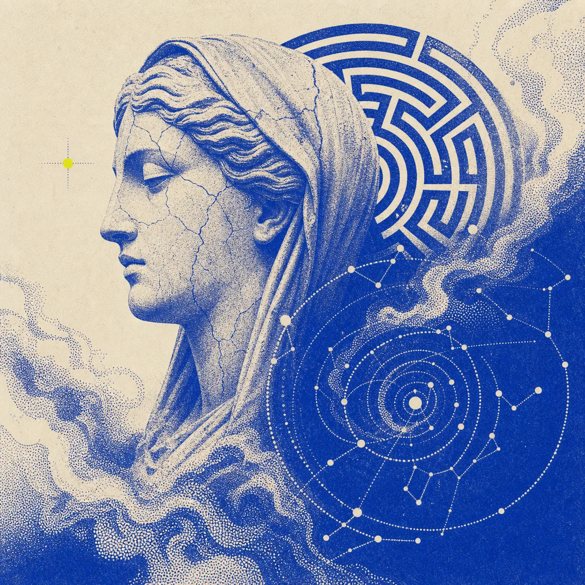
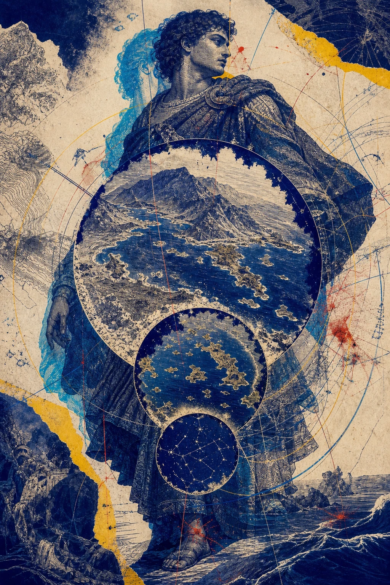
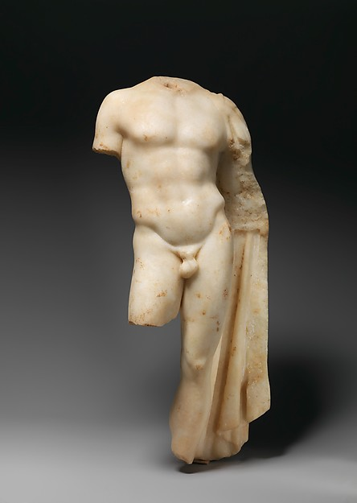
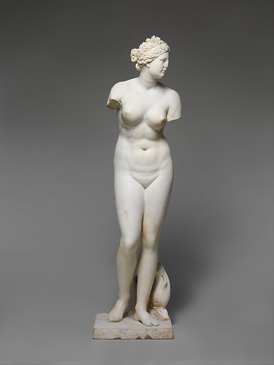
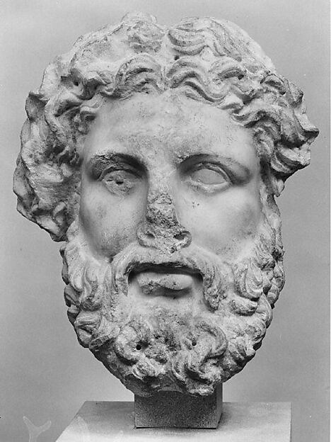
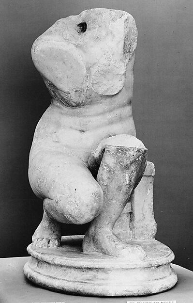

01 · Athéna
Discerner.
La stratégie transforme le bruit en décision créative.
Œuvre originale générée · manifeste disponibleAgence web IA artistique · Lausanne
Nous transformons la culture visuelle en systèmes numériques mémorables — direction artistique, intelligence et code dans un même geste.

Protocole 01 — Le geste
Chaque référence est disséquée, abstraite puis reconstruite pour votre marque. Jamais de collage de tendances, jamais de décision esthétique sans raison.
Marché, usages, récit et sources visuelles.
Mécanismes, territoires, droits et tokens.
Prompts avant code, prototype et matière.
Critique, accessibilité, vitesse et conversion.
Protocole 02 — Le panthéon
04 figures / 04 fonctions
Pas de temple décoratif. Chaque figure explique une compétence réelle de l'agence.

La stratégie transforme le bruit en décision créative.
Œuvre originale générée · manifeste disponible
Hiérarchie, lumière et rythme rendent l'essentiel évident.
Met Open Access · CC0 ↗
Le désir visuel devient confiance, jamais manipulation.
Met Open Access · CC0 ↗

Un système cohérent survit aux modes et aux écrans.
Voir toute la provenance ↗Protocole 03 — La mémoire
Architecture, estampe, mode, photographie, cinéma, artisanat, 3D, art génératif : notre vault relie les œuvres à des principes actionnables, sourcés et licites.
Protocole 04 — Les preuves
Concepts de travail
La collection est protégée par un code de présentation cosmétique. Aucun contenu sensible.
Collection privée
Saisissez le code de présentation pour voir les études.
Protocole 05 — Après l'oracle
CHF / mois
Maintenance IA bornée : fraîcheur, mini-audit mensuel, corrections légères, veille conversion et rapport transparent. Le périmètre final reste contractualisé.